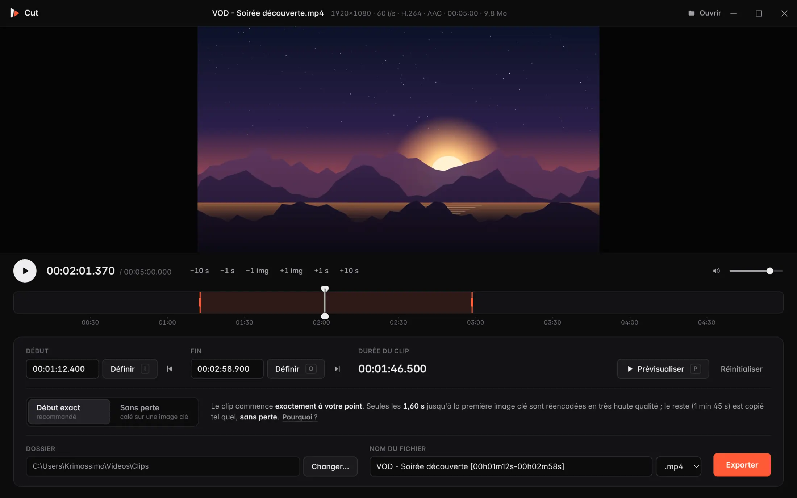
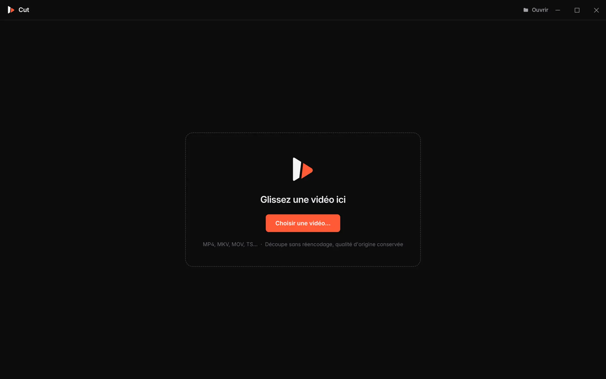

Sans réencodage
Les flux vidéo et audio sont copiés tels quels avec FFmpeg (-c copy). Le clip est identique, bit à bit, à votre vidéo d'origine.
Gratuit · pour Windows
Cut découpe vos VOD Twitch et vos vidéos en quelques secondes, sans réencodage : codecs, résolution, framerate et audio restent identiques à l'original.

Fonctionnalités
Ouvrez une vidéo, placez le début et la fin, exportez. Cut est pensé pour être compris en dix secondes.
Les flux vidéo et audio sont copiés tels quels avec FFmpeg (-c copy). Le clip est identique, bit à bit, à votre vidéo d'origine.
Le clip commence pile où vous l'avez placé. Seules les ~2 s jusqu'à la première image clé sont réencodées ; tout le reste est copié sans perte.
Pas de recalcul de l'image : couper quelques minutes d'une VOD de six heures prend une seconde, pas une demi-heure.
Lecteur intégré, navigation image par image, et un aperçu qui lit exactement le passage qui sera exporté.
Définissez le début et la fin à la position actuelle, ou tapez un temps : 1:02:03.5, 95, 1h02m03s…
MP4, MKV, MOV, TS, WebM, FLV… Glissez-déposez votre fichier dans la fenêtre, exportez en MP4, MKV ou MOV.
Sous le capot
Une vidéo compressée n'enregistre une image complète, appelée image clé, que toutes les 1 à 2 secondes. Les images intermédiaires ne stockent que les différences. Sans réencodage, un clip ne peut donc commencer que sur une image clé.
Cut contourne la limite intelligemment : il réencode en très haute qualité uniquement le court passage entre votre point et la première image clé, puis copie tout le reste tel quel. Chaque export est ensuite vérifié image par image à la jonction.
Comment ça marche

Télécharger
Gratuit, sans compte, sans publicité. Aucun droit administrateur nécessaire.
Recommandé · raccourci Bureau et menu Démarrer, désinstallation depuis Windows
——Questions fréquentes
Oui. Cut copie les flux compressés sans les décoder ni les recalculer : le codec, la résolution, le framerate, le débit et l'audio sont ceux de votre fichier. En mode « Début exact », seules les premières secondes (jusqu'à la première image clé) sont réencodées en très haute qualité, visuellement identique. Le mode « Sans perte » ne réencode rien du tout.
Windows avertit pour tout programme qui n'est pas signé avec un certificat commercial (plusieurs centaines d'euros par an). Cliquez sur Informations complémentaires puis Exécuter quand même. Vous pouvez vérifier que votre fichier est bien l'original grâce à son empreinte SHA-256, indiquée dans la section Télécharger.
Cut ouvre les formats courants : MP4, MKV, MOV, M4V, TS, WebM, FLV et AVI. Il exporte en MP4, MKV ou MOV (par défaut dans le format d'origine). Le lecteur intégré affiche le H.264, le HEVC, le VP9 et l'AV1 ; pour un codec qu'il ne sait pas afficher, la découpe fonctionne quand même.
Non. FFmpeg 8.1 est inclus dans Cut et configuré automatiquement.
Vos réglages (dossier d'export, volume, taille de fenêtre) sont enregistrés localement dans %APPDATA%\Cut. Pour désinstaller : Paramètres → Applications → Cut → Désinstaller. Les fichiers, raccourcis et caches sont supprimés ; Cut vous demande si vous voulez aussi effacer vos réglages.
Pas pour l'instant : Cut est conçu et testé pour Windows 10 et 11.
À propos
Cut est né d'un besoin très concret : découper mes propres VOD Twitch rapidement, sans lancer un logiciel de montage et sans abîmer la qualité de mes vidéos. Je n'ai pas trouvé l'outil simple que je voulais… alors je l'ai fait.
L'idée reste la même à chaque version : une seule chose, bien faite. Pas d'abonnement, pas de compte, pas de fonctionnalités inutiles.
Cut est gratuit et le restera. Si l'outil vous rend service, vous pouvez soutenir son développement avec un don sur Ko-fi : chaque café aide à ajouter de nouvelles fonctionnalités.